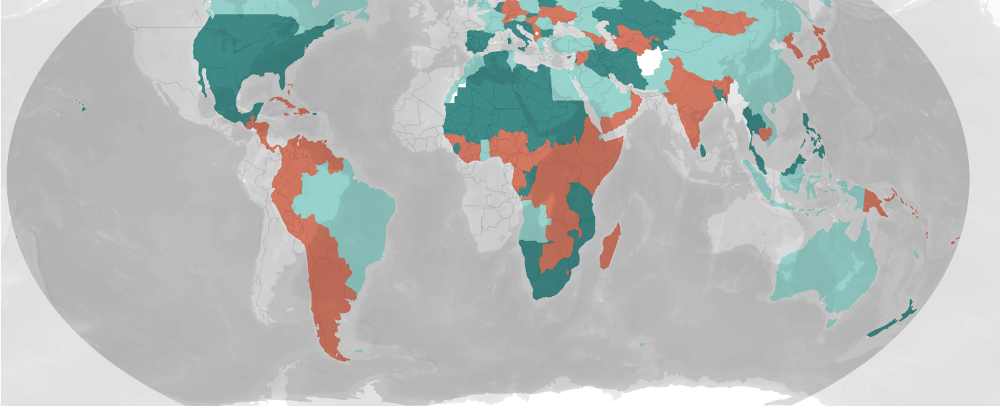
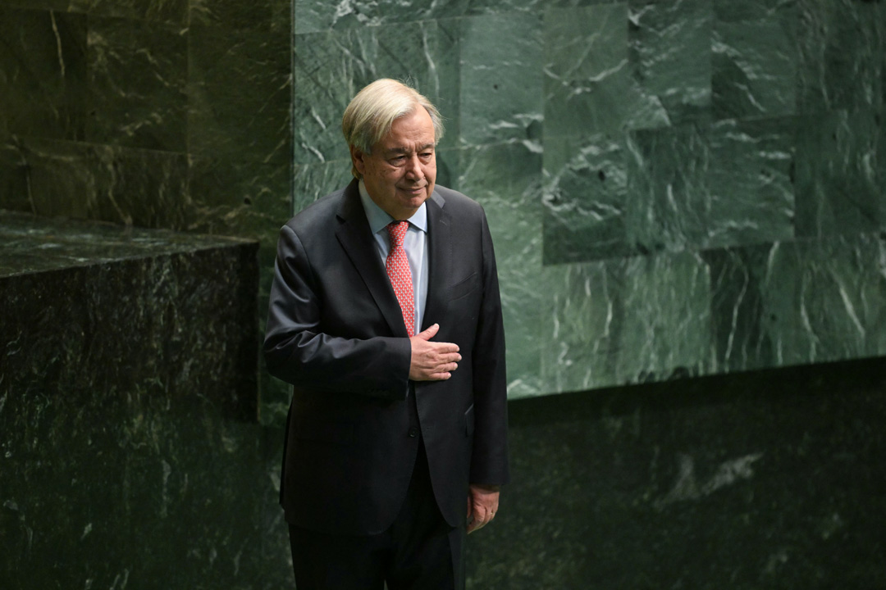

Crisis Group has analysed the 194 speeches delivered during the General Debate, focusing on four crises: Palestine, Iran and the Strait of Hormuz, Ukraine and Sudan, as well as UN-specific issues related to institutional reform and the process for selecting the next Secretary-General.
In the third week of September, representatives of over 190 states gathered in New York for the UN General Assembly’s annual High-Level Week, during which they grappled with the challenges facing an organisation in need of revival. The UN has often found itself paralysed even as geopolitical hotspots proliferate. Many of the 67 presidents, 42 prime ministers, five crowned royals and 80 other dignitaries who spoke during the General Debate (of whom 28, or fewer than one sixth, were women) focused their remarks on domestic concerns – from climate change to rising energy prices to the risks of artificial intelligence. But their speeches to the Assembly also provided a helpful illustration of which conflicts are at the top of UN member states’ minds.

Map unavailable. Showing a reference overview.
Palestine
The crisis in the occupied Palestinian territories was the most referenced during the General Debate, with 100 speakers highlighting the situation in Gaza or Israel-Palestine more broadly. With Israel pursuing its West Bank settlement project more aggressively, 38 of those speakers – including both Israel and the State of Palestine – also put a spotlight on the former’s actions in that territory. Israel, in contrast to most of the other countries that raised the issue, downplayed settler violence as the actions of “a handful of juvenile delinquents”.
- Referred to Gaza or Palestine, and the West Bank (38)
- Referred to Gaza or Palestine only (62)
Despite being the most discussed crisis at the UN – with over half the speakers mentioning the topic – Palestine nonetheless saw a 34 per cent decline in the number of references from 2025. The drop is illustrative of a trend at the UN whereby the Palestinian issue is diminishing in prominence, following the Security Council’s November 2025 resolution endorsing the Trump administration’s Gaza ceasefire plan and the creation of the Board of Peace.
- Referred to Gaza or Palestine, and the West Bank (38)
- Referred to Gaza or Palestine only (62)
- Did not refer to Gaza or Palestine (94)
The crises in Gaza and the West Bank did not garner as much attention at the 2026 General Debate as they did in 2025, when a handful of Western countries made major announcements recognising Palestinian statehood on the back of a French- and Saudi-led conference on the two-state solution. That said, member states and civil society organisations convened numerous side events on the margins of High-Level Week – including a ministerial gathering of the Global Alliance for the Implementation of the Two-State Solution – to help keep the issue on the diplomatic radar.
- Referred to Gaza or Palestine, and the West Bank (38)
- Referred to Gaza or Palestine only (62)
- Did not refer to Gaza or Palestine (94)
Iran
At the General Assembly, 65 speakers – over one third of the UN’s membership – explicitly mentioned the U.S.-Israeli war with Iran or the contest over control of the Strait of Hormuz. That number, however, does not include countries’ indirect references to the broader crisis in the Middle East, the importance of freedom of navigation as a matter of international law or other states’ concerns about President Donald Trump’s threat to “annihilate” Iran. It also does not take into account delegations that highlighted the strains on global supply chains and energy prices – a key domestic concern for many – without explicitly referencing either Iran or the Strait of Hormuz. With various diplomatic efforts around the war taking place throughout High-Level Week, including brief discussions between U.S. and Iranian diplomats, some UN members may have preferred to keep their remarks about the crisis suitably vague.
- Referred to Iran (43)
- Referred to the Strait of Hormuz only (22)
- Did not refer to Iran or the Strait of Hormuz (129)
Ukraine
There continued to be a downward trend in the UN’s focus on the war in Ukraine, with only 78 speakers mentioning the subject, a steep fall from the 106 who did in 2025. Among these speakers, a third of them brought up the matter without explicitly mentioning Russia as a party to – and aggressor in – the conflict. Notably, 2026 was the first year since Russia’s full-scale invasion of Ukraine in 2022 when fewer than half the UN membership’s representatives spoke about the war.
- Referred to Ukraine and Russia (52)
- Referred to Ukraine only (26)
- Did not refer to Ukraine (116)
Of the 78 speakers who referenced Ukraine, 42 were from Europe (including the president of the European Council), reinforcing a multi-year trend by which Ukraine is shifting from being a matter of global concern to more of a regional one. While most of those who raised the issue of the war did so in support of Kyiv’s sovereignty and territorial integrity, representatives of Mali and Niger – two of the three Sahelian states that jointly accused Ukraine of supporting terrorism in their region in 2024 – used their speeches to reiterate those charges, alleging that Kyiv has attempted to destabilise the Sahel.
- Referred to Ukraine and Russia (52)
- Referred to Ukraine only (26)
A similar trend emerged during the annual Security Council meeting about Ukraine that took place during High-Level Week. Seventeen states and the EU sent high-level officials (heads of government or state, or ministers) to participate in the Council meeting. With the exceptions of Bahrain and Panama, all were from Europe. Notably absent was Ukrainian President Volodymyr Zelenskyy, who despite speaking at the General Assembly that same morning chose to forgo an appearance at the Security Council. After years of participating in this annual session with few tangible outcomes, Zelenskyy may have concluded that it has little value for his country’s efforts to repel Russian aggression.
Sudan
Among the four major conflicts in the spotlight of the 2026 General Debate, Sudan remained the least referenced. Despite the conflict standing out for producing the world’s largest humanitarian crisis, only 65 speakers mentioned the war in 2026, three more than in 2025.
Member states did host numerous side events on Sudan, including the first in-person meetings of the Quad (Egypt, Saudi Arabia, the United Arab Emirates and the U.S.) and the Quintet (the African Union, European Union, Intergovernmental Authority on Development, League of Arab States and UN) – two separate, but parallel groupings of states and multilateral organisations working to end the country’s civil war. These efforts were overshadowed, however, by the Trump administration’s decision to reject the visa application for Abdel Fattah al-Burhan, chair of Sudan’s Transitional Sovereignty Council and head of the Sudanese armed forces, one of the two main belligerents.
- Referred to Sudan (65)
- Did not refer to Sudan (129)
UN Reform
The need for institutional reform of the UN continued to be a popular topic, with 124 speakers referencing it, only four fewer than 2025. Discussion of UN reform is split primarily into two tracks: UN80, the initiative launched in 2025 by Secretary-General António Guterres to streamline the organisation through a combination of spending cuts, reviews of its mandates and structural changes; and Security Council reform, a longstanding effort by UN members to update the Council’s composition and modify the veto power its permanent members hold. While the number of speakers bruiting Council reform (105) was similar to 2025, there was a 33 per cent decline in the number of them who explicitly mentioned UN80, raising the question of whether momentum for the initiative will continue past Guterres’s term, which ends in December.
- Referred to UN80 and Security Council Reform (30)
- Referred to UN80 only (19)
- Referred to Security Council reform only (75)
- Did not refer to UN reform (70)
The Next Secretary-General
The question of who will succeed Secretary-General Guterres was prominent amid the fanfare of High-Level Week, dominating many of the side events organised by civil society. Yet fewer than one third of speakers, 64 of them, used their remarks to share what they would like to see from the organisation’s next leader. Those who did so endorsed specific candidates, urged the next Secretary-General to continue efforts to strengthen the UN or made the case for a woman leader. The low number may be a symptom of the limited say the wider membership has in selecting the UN head – the fifteen members of the Security Council vote to choose a candidate to recommend to the General Assembly – as opposed to a lack of interest in what the next Secretary-General should do.
- Referred to the next Secretary-General (64)
- Did not refer to the next Secretary-General (130)

Conclusion
While many have identified the need for the next Secretary-General to take a more proactive approach to peacemaking, it was notable that world leaders gave major conflicts on the UN’s agenda less attention at the 2026 General Debate than in previous years. The absence of a single crisis dominating the UN agenda also points to the multitude of active conflicts in the world: more than at any time since World War II. The vast diversity in focus among the 194 speeches is demonstrative of the competing priorities that UN members are confronting, with no clear consensus as to which of the many crises they want the UN to deal with. The next Secretary-General will inherit the difficult task of deciding where to direct the organisation’s efforts when its members’ interests are so dispersed and its financial and political resources are increasingly strained.